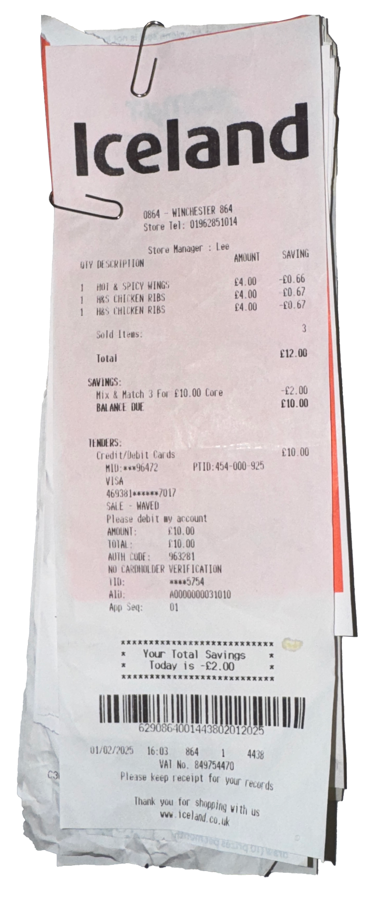
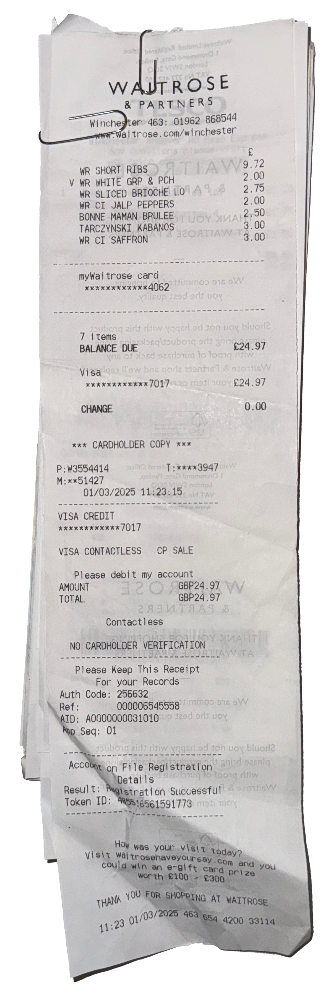
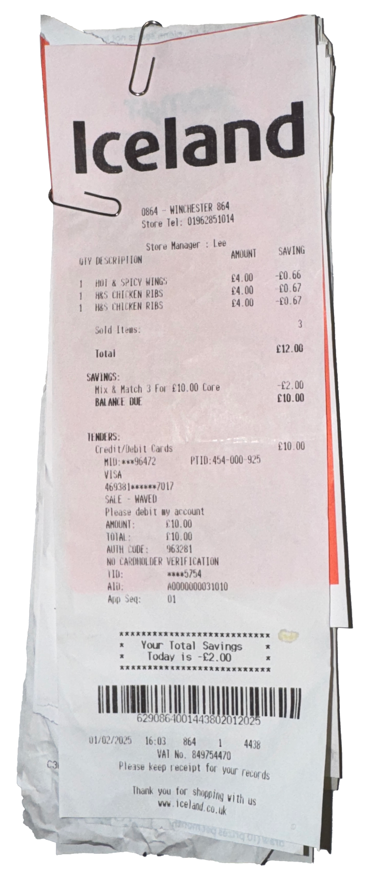
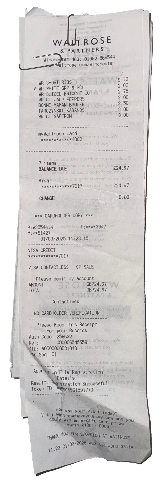

 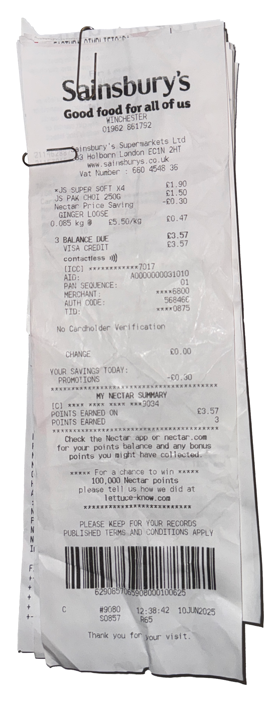
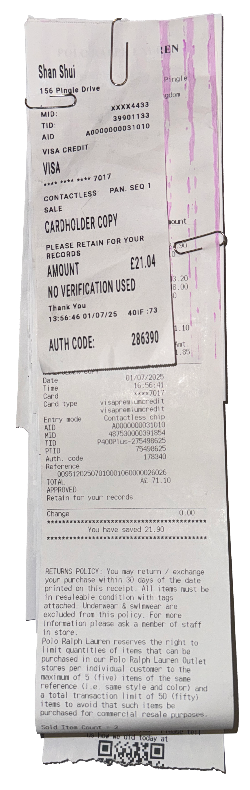
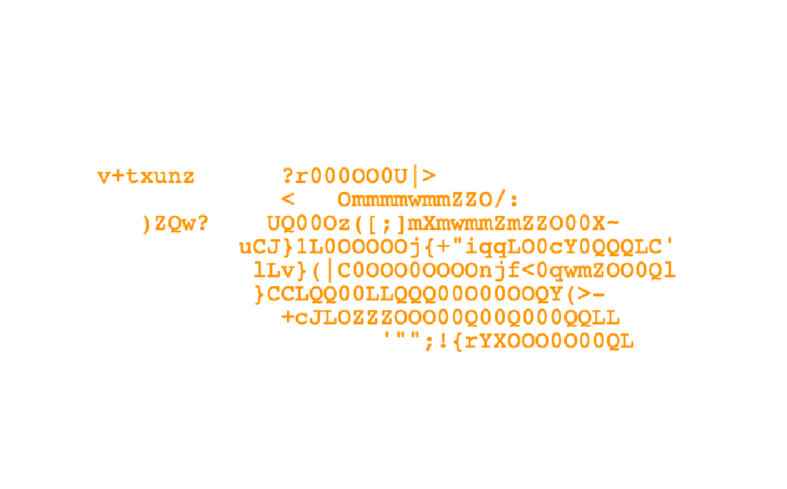
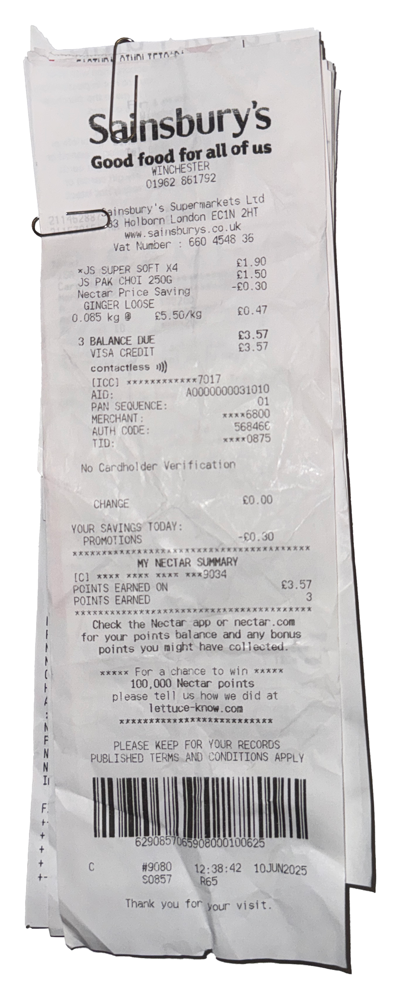
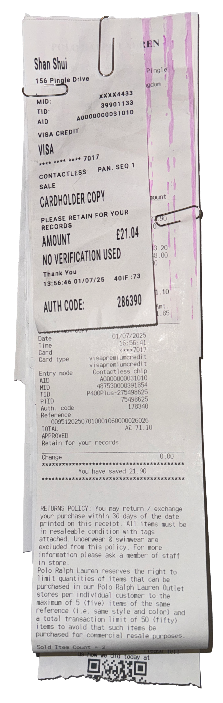
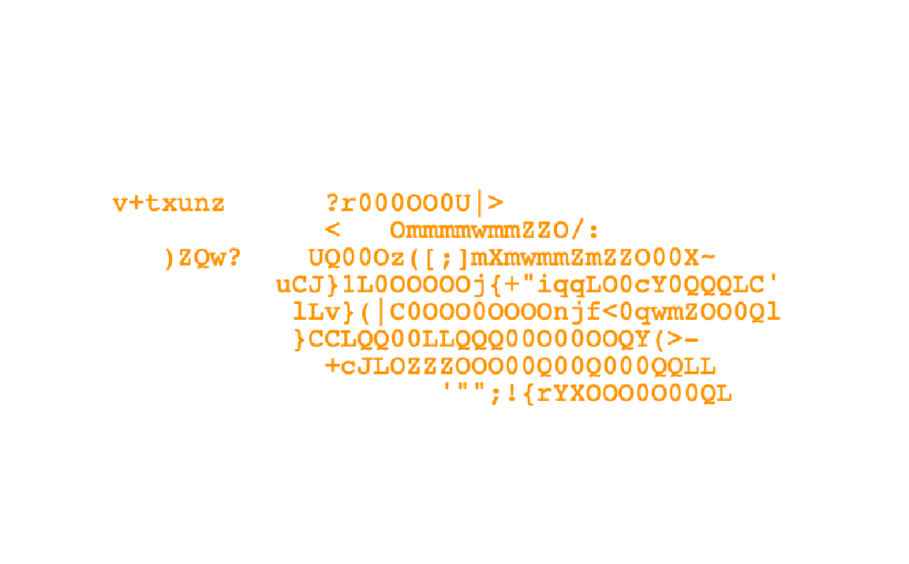


 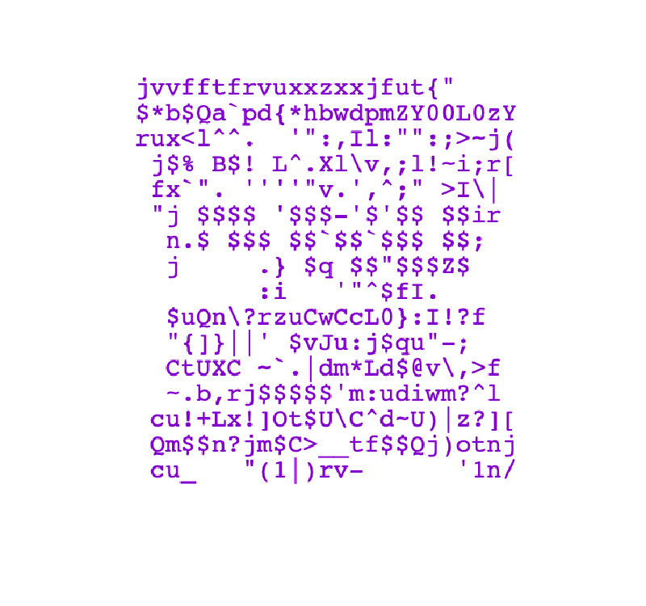
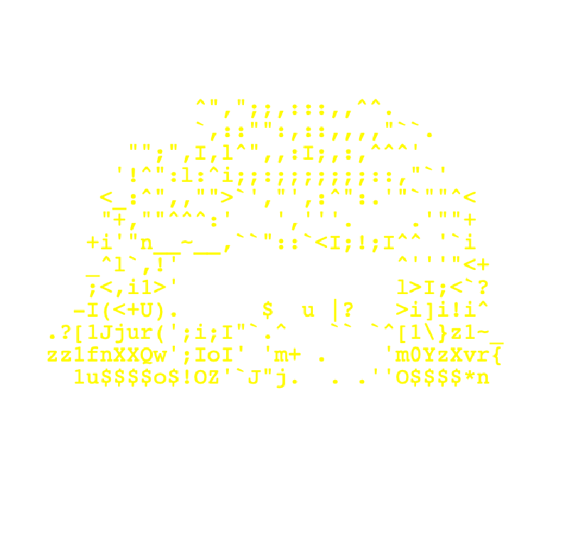
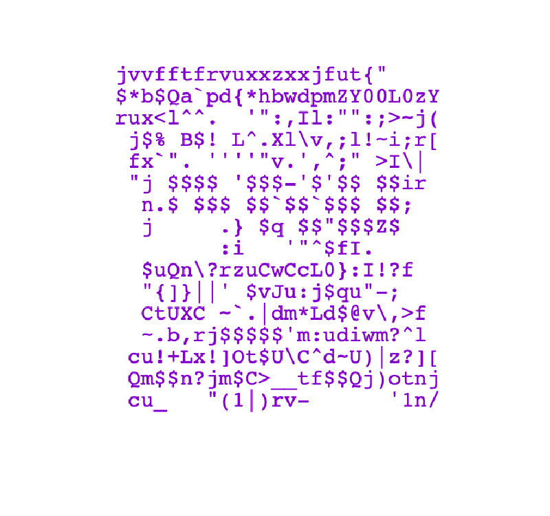
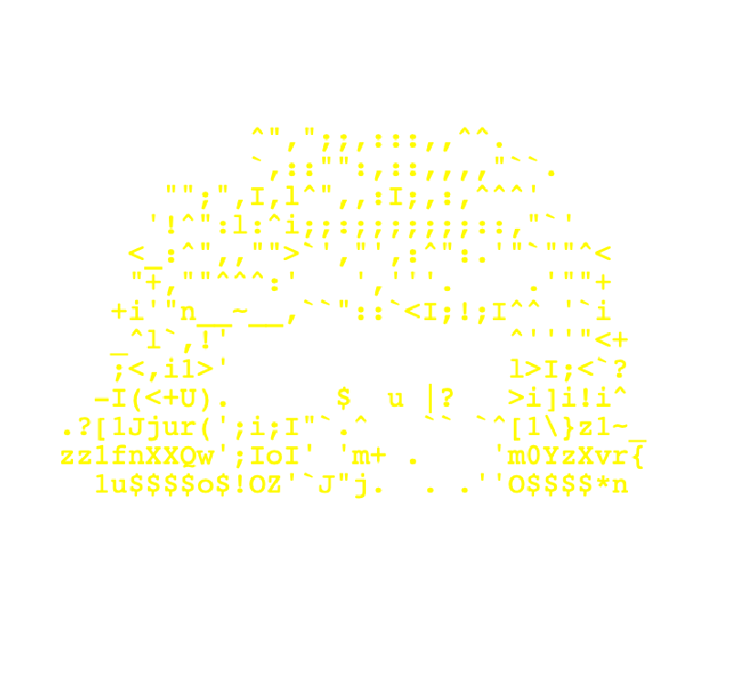

 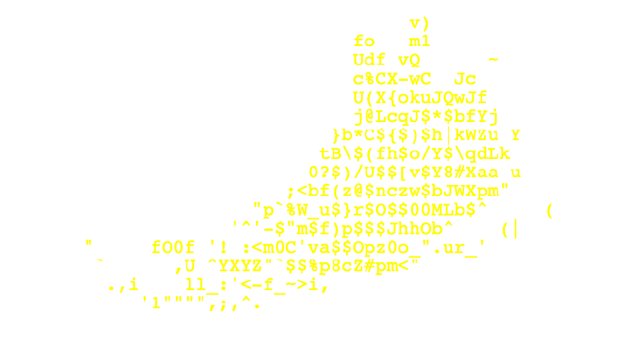
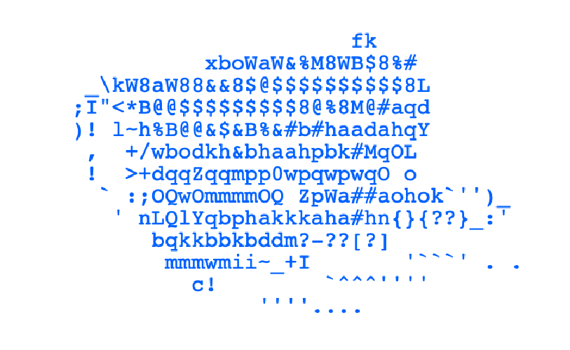
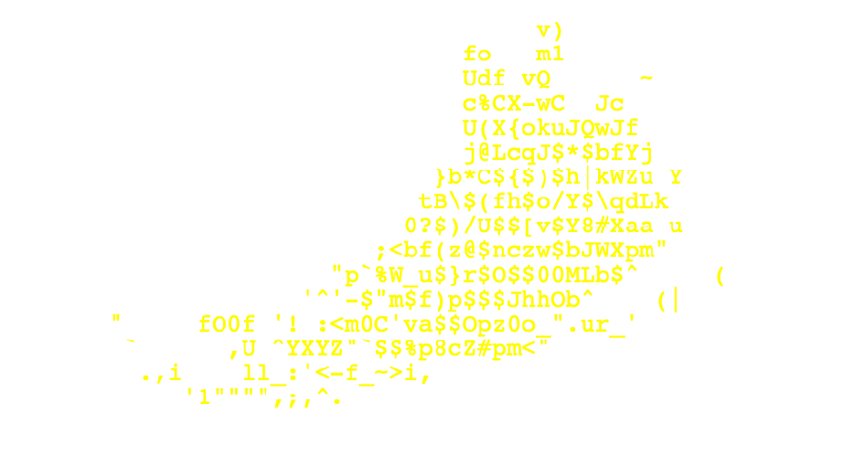
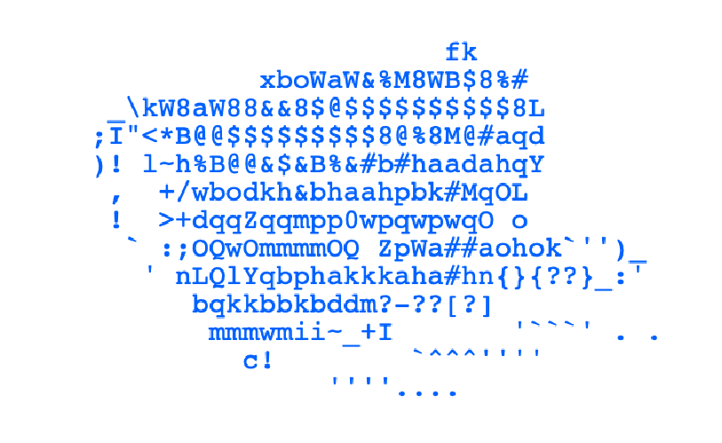
 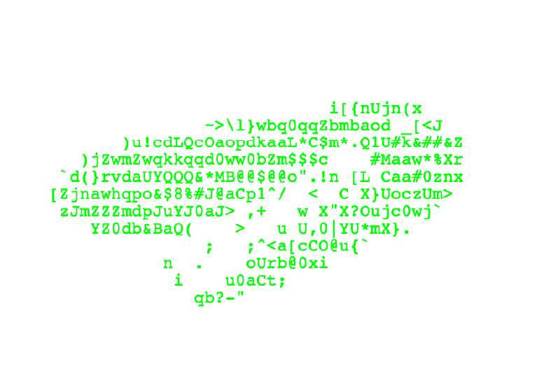
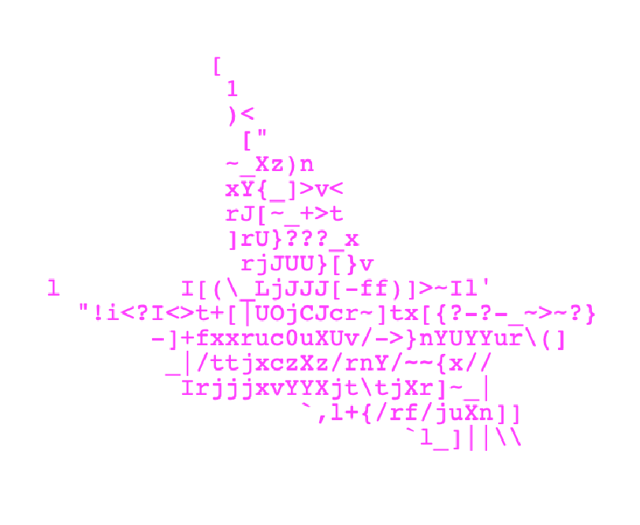
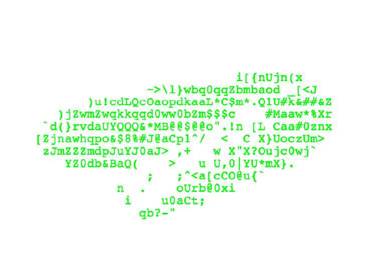
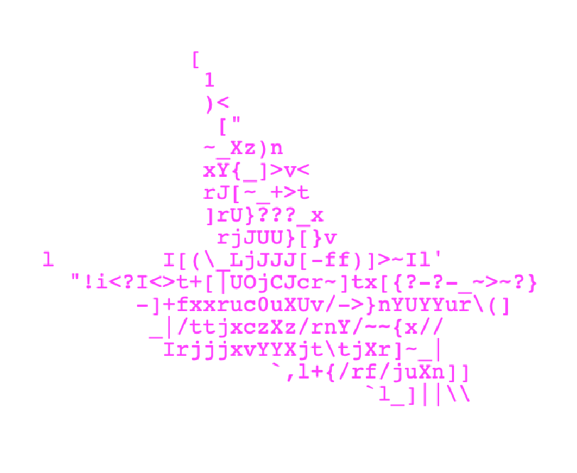

Proofport begins with my habit of collecting thermal paper receipts, using it as an entry point to explore the state of "temporary identity" at the margins of institutional systems, and the sense of belonging that comes from these traces of existence.
In a world that values legal status and stable belonging, must one's "existence" always be tied to external labels? Or can subtle, private, and fluid traces themselves shape our truest identity?
The dilemma of those with temporary status is this: they have movement but lack voice; they leave traces but cannot "become part of the whole." Our systems are built on the assumption of "fixed identity" and "permanent settlement," while people like me—international students, global interns, seasonal workers, short-term migrants—are often seen as temporary, revocable, and marginalized. We live here yet rarely feel we truly belong.
Proofport uses my personal experience as a lens to invite a rethinking of the legitimacy of "temporary identities" and "temporary existence," and to call for a new social vision: one that defines belonging and identity not through documents and labels, but through actions and participation.